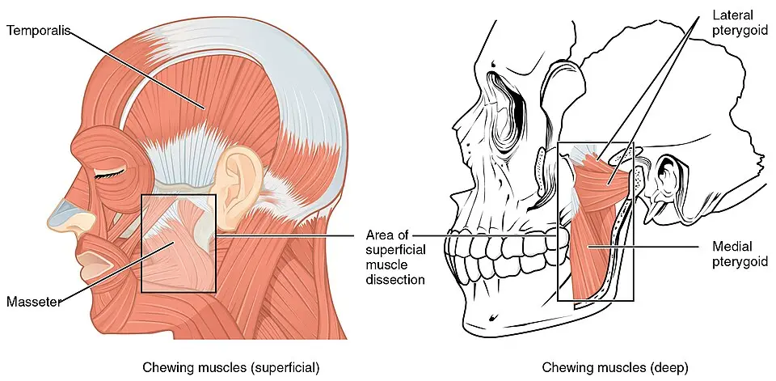

DX.3 — Trouble temporo-mandibulaire douloureux
Le trouble temporo-mandibulaire douloureux se reconnaît à une douleur de la mâchoire, de la tempe ou de l’oreille que la mastication modifie et que la palpation reproduit S5. Le médecin écarte d’abord la fracture, l’infection, l’artérite et la névralgie, puis il commence un traitement conservateur et réversible, car l’évolution reste le plus souvent favorable S3 S1.
1. Définition
Les troubles temporo-mandibulaires (TMD, temporomandibular disorders) sont un ensemble de douleurs et de dysfonctions des muscles masticateurs ou de l’articulation temporo-mandibulaire (ATM) S5 S1. Le trouble est dit douloureux lorsque la douleur, modifiée par la fonction de la mâchoire, correspond à une myalgie, à une arthralgie ou à une céphalée attribuée au trouble S5. La littérature suisse emploie le terme de myoarthropathie de l’appareil manducateur, qui réunit les atteintes musculaires et articulaires S1 S2.
2. Épidémiologie (Suisse, puis Europe)
À Berne, l’équipe de prothèse dentaire a analysé 242 patients adressés entre 2003 et 2006 pour une douleur maxillo-faciale, des bruits articulaires ou une ouverture limitée S1. Les femmes y représentaient 76 % des patients, et l’âge moyen atteignait 40,4 ans S1. La douleur dominait la plainte, puisque 91,3 % des patients la signalaient S1.
Le CHUV (Centre hospitalier universitaire vaudois) rapporte que jusqu’à 75 % de la population présentent un signe articulaire, alors que seuls 5 % à 7 % des patients nécessitent un traitement S3. Il situe le rapport entre femmes et hommes à 4 pour 1 et l’âge habituel entre 15 et 45 ans S3. La fenêtre chiffres et limites indique d’où vient chaque chiffre et ce qu’il ne permet pas de conclure.
Chiffres et limites
| Chiffre | Population et mesure | Ce qu’il ne mesure pas | Source |
|---|---|---|---|
| 242 patients | Clinique de prothèse dentaire de l’Université de Berne, premières consultations de 2003 à 2006 | Une incidence en population | S1 |
| 76 % de femmes ; âge moyen 40,4 ± 17,3 ans | Même cohorte bernoise | Le risque individuel selon le sexe | S1 |
| Douleur 91,3 %, bruits 61,1 %, limitation 53,6 % | Symptômes clés, isolés ou associés, figure de la cohorte bernoise | La gravité des symptômes | S1 |
| Près de 9 % des patients examinés chaque année | Patients de la clinique bernoise présentant les symptômes clés | La fréquence en médecine de premier recours | S1 |
| 5 % à 15 % | Prévalence des douleurs maxillo-faciales en Europe et en Amérique du Nord, citée par l’équipe bernoise | La part des formes qui demandent un traitement | S1 |
| 75 % d’au moins un signe, 33 % d’au moins un symptôme, 5 % à 7 % à traiter | Population générale, données citées par le CHUV | La durée des symptômes | S3 |
| 5 % à 12 % de la population | Estimation du consortium international, publication nord-américaine | Une donnée suisse | S5 |
Aucune incidence suisse en population n’a été trouvée ; les chiffres bernois décrivent donc une clientèle adressée, et non le risque d’un patient au cabinet S1. Le consortium international classe ce trouble au deuxième rang des affections musculosquelettiques douloureuses, juste après la lombalgie chronique S5.
Les patients consultent souvent plusieurs spécialistes avant de rencontrer un clinicien compétent, ce qui allonge l’évolution et augmente les coûts S1. La fenêtre diagnostics de la cohorte bernoise montre la répartition des formes musculaires, articulaires et mixtes.
Diagnostics de la cohorte bernoise
| Diagnostic (axe I) | Part des 242 patients | Coût moyen du traitement | Source |
|---|---|---|---|
| Formes combinées (muscle, disque, arthrose) | 37,6 % | 832 francs | S1 |
| Douleur myofasciale | 16,5 % | 427 francs | S1 |
| Déplacement discal antérieur réductible | 14,9 % | 413 francs | S1 |
| Autres diagnostics (fracture, tumeur, artérite temporale…) | 10,3 % | 534 francs | S1 |
| Douleur myofasciale avec ouverture limitée | 5,8 % | 657 francs | S1 |
| Déplacement discal non réductible avec ouverture limitée | 5,8 % | 562 francs | S1 |
| Arthrose activée | 4,5 % | 1281 francs | S1 |
| Arthralgie | 2,1 % | 287 francs | S1 |
L’arthrose activée coûtait le plus cher et touchait surtout les patients de plus de 45 ans, alors que l’arthralgie isolée coûtait le moins S1. Un patient sur dix recevait finalement un autre diagnostic, ce qui justifie un diagnostic différentiel rigoureux avant tout traitement S1.
3. Physiopathologie
Les HUG (Hôpitaux universitaires de Genève) décrivent deux articulations suspendues comme l’épaule et munies d’un ménisque comme le genou, qui permettent de manger, de parler et de déglutir S4. Le disque fibro-cartilagineux biconcave sépare le condyle de la fosse temporale et prolonge en réalité le tendon du muscle ptérygoïdien latéral S3. La fenêtre base anatomique montre ces repères sur une photographie annotée.
Base anatomique : condyle, fosse et tubercule
Articulation temporo-mandibulaire sur crâne sec. La photographie en couleurs montre, en vue latérale, le condyle mandibulaire, la fosse de l’os temporal et le tubercule articulaire S3.

Lisez d’abord seul ce cliché (articulation temporo-mandibulaire sur crâne sec), puis cherchez vous-même les repères avant d’ouvrir la copie annotée.
- 1. Le condyle mandibulaire glisse en avant à l’ouverture ; le CHUV indique qu’on le palpe sous l’arcade zygomatique, à 1 ou 2 cm en avant du tragus S3.
- 2. La fosse mandibulaire de l’os temporal reçoit le condyle ; le disque sépare les deux surfaces en deux espaces articulaires S3.
- 3. Le tubercule articulaire limite la course du condyle ; dans la luxation, le condyle le franchit et la bouche reste ouverte S3.
- 4. L’échancrure mandibulaire sépare le condyle du processus coronoïde, où s’insère le muscle temporal S3.
- 5. Le processus coronoïde reçoit le tendon du temporal, muscle que le médecin palpe à la tempe S5.
Ce que l’image décide. Le médecin palpe le condyle en avant du tragus pendant l’ouverture, car une douleur familière ou un bruit à cet endroit oriente vers une atteinte articulaire S3 S5.

Dans la forme musculaire, la douleur et les spasmes des masticateurs traduisent une hyperactivité musculaire, et les facteurs psychologiques y jouent un rôle prédominant S3. Dans la forme articulaire, le déplacement antérieur du disque interpose sa partie postérieure entre le condyle et l’éminence, ce qui provoque la douleur S3. Lorsque le disque se replace à l’ouverture, il produit le craquement caractéristique du déplacement réductible S3.
L’équipe zurichoise observe que le serrement des dents à l’éveil joue un rôle plus important que le bruxisme du sommeil, car les patients gardent plus souvent les dents en contact S2. Le CHUV relève un bruxisme sévère chez environ 50 % des patients douloureux, sans corrélation entre l’usure dentaire et la gravité des symptômes S3. La fenêtre mécanismes et facteurs distingue ce qui est établi de ce qui reste controversé.
Mécanismes et facteurs
| Facteur | Ce que disent les sources suisses | Conséquence pratique | Source |
|---|---|---|---|
| Hyperactivité musculaire | Douleur, sensibilité et spasmes des masticateurs ; cause spécifique rarement trouvée | Traitement musculaire : physiothérapie, détente | S3 |
| Déplacement discal antérieur | Craquement s’il se réduit ; blocage en fermeture s’il ne se réduit pas | Mesurer l’ouverture, écouter les bruits | S3 |
| Serrement à l’éveil | Plus déterminant que le bruxisme nocturne ; dents plus souvent en contact | Apprendre au patient à repérer le contact | S2 |
| Bruxisme du sommeil | Présent chez environ 50 % des patients douloureux, sans lien avec la gravité | Gouttière nocturne si bruxisme sévère | S3 |
| Occlusion dentaire | Rôle controversé ; meulages sélectifs sans preuve scientifique formelle | Éviter les gestes irréversibles | S3 S2 |
| Orthodontie | Influence possible sur la position du condyle, causalité non démontrée | Ne pas l’accuser sans preuve | S3 |
| Stress, anxiété, événements de vie | Douleur plus forte en période de stress intense : deuil, perte d’emploi, divorce | Explorer l’axe psychosocial | S3 S2 |
| Sensibilisation centrale | La persistance favorise la chronicisation et réduit le succès des traitements | Traiter tôt, dès la phase aiguë | S1 S5 |
L’équipe bernoise rappelle aussi le rôle des hormones féminines, qui soulageraient la douleur musculaire à court terme mais l’accentueraient à long terme S1.
Plus la douleur persiste, plus des facteurs cognitifs, psychosociaux et comportementaux apparaissent, ce qui amplifie la sensibilité et réduit le succès des traitements standards S5. Cette évolution explique pourquoi les sources demandent d’évaluer dès le départ l’axe somatique et l’axe psychosocial S1 S5.
4. Démarche diagnostique
La démarche commence par l’écart des urgences, se poursuit par le dépistage du trouble douloureux, puis classe la forme et mesure son retentissement S5 S1. Le CHUV juge qu’une anamnèse chronologique et un examen clinique suffisent en général à poser le diagnostic et à décider du traitement S3. La fenêtre démarche étape par étape fixe l’ordre, le geste et la décision de chaque étape.
Démarche étape par étape
| Étape | Geste ciblé | Seuil ou constat | Décision | Source |
|---|---|---|---|---|
| 1. Écarter une urgence | Traumatisme, fièvre, tuméfaction, âge, déficit sensitif | Un seul drapeau rouge | Diagnostic différentiel avant tout traitement | S1 S2 |
| 2. Dépister | Questionnaire de dépistage de la douleur liée au trouble | Sensibilité et spécificité de 0,95 ou plus | Dépistage positif : évaluation complète | S5 |
| 3. Provoquer la douleur familière | Ouverture, latéralités, propulsion, palpation de l’ATM, du temporal et du masséter | Douleur semblable à la plainte | Myalgie ou arthralgie confirmée | S5 |
| 4. Mesurer l’ouverture | Distance interincisive en millimètres | Normale entre 35 et 45 mm | Ouverture limitée : forme discale non réductible | S3 |
| 5. Écouter l’articulation | Craquement, crépitation | Craquement isolé fréquent chez le sujet sain | Traiter seulement s’il gêne ou s’il fait mal | S3 |
| 6. Évaluer l’axe psychosocial | Intensité de la douleur, détresse, limitation de la mâchoire, comportements | Douleur de 6 mois ou plus, échec antérieur | Évaluation obligatoire, orientation vers la douleur chronique | S5 S4 |
| 7. Imager si nécessaire | Orthopantomogramme, puis IRM (imagerie par résonance magnétique) dans les cas réfractaires | Doute dentaire, échec du traitement, suspicion tumorale | Ni imagerie de routine ni IRM d’emblée | S3 S1 |
5. Anamnèse ciblée et drapeaux rouges
L’anamnèse cherche d’abord si la douleur varie avec la mastication, l’ouverture ou le serrement, car cette modification par la fonction conditionne tous les diagnostics douloureux S5. Le médecin fait préciser le siège, en général péri-auriculaire, l’irradiation vers la tempe, les bruits, les blocages et les périodes de stress S3. La fenêtre questions ciblées traduit chaque question en orientation.
Questions ciblées
| Question | Réponse évocatrice | Orientation | Source |
|---|---|---|---|
| La douleur change-t-elle en mâchant, en bâillant ou en serrant ? | Oui, la fonction l’aggrave | Trouble douloureux de type myalgie ou arthralgie | S5 |
| Où siège la douleur ? | Devant l’oreille, à la joue ou à la tempe, uni- ou bilatérale | Muscle ou articulation | S3 |
| La mâchoire craque-t-elle ? | Craquement à l’ouverture ou à la fermeture | Déplacement discal réductible | S3 |
| La bouche se bloque-t-elle ? | Elle ne s’ouvre plus complètement | Déplacement discal non réductible : blocage en fermeture | S3 |
| La bouche reste-t-elle ouverte ? | Impossible de fermer | Luxation condylienne : blocage en ouverture | S3 |
| Serrez-vous ou grincez-vous des dents ? | Serrement diurne, grincement signalé par l’entourage | Facteur d’entretien musculaire | S2 S3 |
| Que se passe-t-il dans votre vie ? | Deuil, perte d’emploi, divorce, surcharge | Composante psychosociale à évaluer | S3 S2 |
| Quels traitements avez-vous déjà reçus ? | Échec d’un traitement antérieur | Évaluation psychosociale obligatoire | S5 |
Les drapeaux rouges orientent vers un autre diagnostic, car un patient bernois sur dix présentait une fracture, une ankylose, une artérite temporale, une lymphadénite ou une tumeur S1. La douleur en décharges de quelques secondes, déclenchée par le toucher, oriente plutôt vers une névralgie du trijumeau qu’une myoarthropathie S7 S2. La fenêtre drapeaux rouges et conduite associe chaque signe à une action.
Drapeaux rouges et conduite
| Signe d’alerte | Diagnostic à évoquer | Conduite | Source |
|---|---|---|---|
| Traumatisme récent, malocclusion soudaine | Fracture mandibulaire (DX.6) | Orthopantomogramme, avis maxillo-facial | S1 S3 |
| Bouche bloquée en position ouverte | Luxation mandibulaire (DX.10) | Réduction en urgence | S3 |
| Fièvre, tuméfaction, adénopathie | Infection dentaire ou lymphadénite | Examen dentaire et cervical, traitement de la cause | S1 S2 |
| Patient âgé, douleur temporale nouvelle | Artérite temporale (DX.9) | Bilan inflammatoire le jour même | S1 S2 |
| Décharges brèves déclenchées par le toucher | Névralgie du trijumeau (DX.8) | Examen neurologique, IRM | S7 S8 |
| Déficit sensitif objectif, engourdissement mesurable | Atteinte nerveuse ou tumeur | Imagerie et avis spécialisé | S2 S6 |
| Douleur progressive sans lien avec la fonction | Tumeur articulaire ou extra-articulaire | Imagerie en coupes | S2 S3 |
Le signe d’alerte ne prouve pas l’autre diagnostic ; il interdit seulement de conclure à un trouble temporo-mandibulaire avant d’avoir vérifié cette piste S1.
6. Examen physique ciblé, région par région
L’examen suit six régions, chacune dans sa fenêtre : face et posture, articulation, muscles masticateurs, ouverture et mouvements, cavité buccale et nerfs crâniens. Le clinicien doit provoquer la douleur habituelle du patient, sinon la réponse positive n’a pas de valeur diagnostique S5.
Région 1 — Face et posture
| Geste | Normal | Pathologique | Valeur et piège | Source |
|---|---|---|---|---|
| Regarder la face de face | Symétrie | Asymétrie, hypertrophie des masséters | Hypertrophie : serrement chronique probable | S3 |
| Examiner les dents | Usure modérée | Facettes d’usure marquées | Usure sans lien avec la gravité de la douleur | S3 |
| Observer l’occlusion | Engrènement habituel | Malocclusion soudaine | Malocclusion nouvelle : fracture ou luxation | S1 S3 |
Région 2 — Articulation temporo-mandibulaire
| Geste | Normal | Pathologique | Interprétation | Source |
|---|---|---|---|---|
| Palper sous l’arcade zygomatique, 1 à 2 cm en avant du tragus | Indolore | Douleur familière | Arthralgie | S3 S5 |
| Palper la partie postérieure par le conduit auditif externe | Indolore | Douleur | Atteinte rétrodiscale ou capsulite | S3 |
| Écouter à l’ouverture et à la fermeture | Silence | Craquement | Déplacement discal réductible | S3 |
| Écouter les mouvements | Silence | Crépitation | Arthrose (atteinte dégénérative) | S5 S3 |
| Faire bouger la mâchoire avec la main sur l’articulation | Course fluide | Douleur à tout mouvement | Arthralgie selon les critères internationaux | S5 |
Un craquement isolé et occasionnel reste très fréquent dans la population normale ; il ne justifie pas à lui seul un traitement S3.
Région 3 — Muscles masticateurs
| Geste | Seuil | Résultat positif | Interprétation | Source |
|---|---|---|---|---|
| Palper le temporal | 1 kg pendant 2 secondes | Douleur familière | Myalgie ; céphalée familière : céphalée attribuée au trouble | S5 |
| Palper le masséter | 1 kg pendant 2 secondes | Douleur familière | Myalgie | S5 |
| Prolonger la pression | 1 kg pendant 5 secondes | Douleur qui s’étend ou se projette | Douleur myofasciale, avec projection si elle dépasse le muscle | S5 |
| Chercher les zones gâchettes | Palpation des temporaux, masséters et sterno-cléido-mastoïdiens | Douleur reproductible | Syndrome myofascial | S3 |
Muscles masticateurs superficiels et profonds. Le schéma en couleurs montre à gauche le temporal et le masséter, puis à droite les ptérygoïdiens latéral et médial S3.

Lisez d’abord seul ce cliché (muscles masticateurs superficiels et profonds), puis cherchez vous-même les repères avant d’ouvrir la copie annotée.
- 1. Le temporal se palpe à la tempe ; une douleur familière à cet endroit soutient la myalgie ou la céphalée attribuée au trouble S5.
- 2. Le masséter se palpe sur l’angle de la mâchoire, avec une pression de 1 kg pendant 2 secondes S5.
- 3. L’ATM se palpe juste en avant de l’oreille, sous l’arcade zygomatique, pendant l’ouverture et la fermeture S3.
- 4. Le ptérygoïdien latéral prolonge le disque ; son spasme accompagne souvent le déplacement discal S3.
- 5. Le ptérygoïdien médial, profond, se palpe mal ; le CHUV le cite parmi les muscles porteurs de zones gâchettes S3.
Ce que l’image décide. La palpation ciblée du temporal et du masséter suffit à la plupart des diagnostics musculaires, à condition que le patient reconnaisse sa douleur habituelle S5.

Région 4 — Ouverture et mouvements
| Mesure | Valeur normale | Valeur pathologique | Interprétation | Source |
|---|---|---|---|---|
| Ouverture entre les incisives | 35 à 45 mm | Limitée à 25 mm ou moins | Déplacement discal non réductible : blocage en fermeture | S3 |
| Ouverture assistée, recouvrement inclus | 40 mm ou plus | Moins de 40 mm | Sous-type « avec ouverture limitée » du déplacement non réductible | S5 |
| Latéralités et propulsion | Environ 10 mm | Diminuées ou douloureuses | Atteinte articulaire ou musculaire | S3 |
| Trajet de l’ouverture | Rectiligne | En zigzag | Déplacement discal réductible | S3 |
| Fermeture | Possible | Impossible, bouche ouverte | Luxation condylienne, et non trouble discal | S3 |
Une ouverture limitée reste rare dans un syndrome musculaire pur ; elle oriente donc d’abord vers le disque S3.
Région 5 — Cavité buccale et dents
| Geste | Constat | Interprétation | Source |
|---|---|---|---|
| Percuter et tester les dents de la zone douloureuse | Dent sensible ou carie profonde | Douleur dentaire à traiter d’abord | S1 S2 |
| Faire mordre puis relâcher | Douleur au relâchement de la morsure | Fracture verticale de la dent | S2 |
| Inspecter gencive et muqueuse | Opercule enflammé, pus | Péricoronarite (DX.5) | S2 |
Une douleur faciale prise à tort pour une dent conduit parfois à des soins dentaires irréversibles et inutiles ; un diagnostic différentiel précis protège le patient S1.
Région 6 — Nerfs crâniens et cou
| Geste | Normal | Pathologique | Interprétation | Source |
|---|---|---|---|---|
| Tester le toucher dans les trois territoires du trijumeau | Symétrique | Hypoesthésie objective | Autre pathologie : imagerie | S2 S6 |
| Chercher une zone gâchette autour de l’aile du nez et des lèvres | Absente | Décharge déclenchée par un toucher léger | Névralgie du trijumeau | S6 S7 |
| Palper les ganglions cervicaux | Non palpables | Adénopathie sensible | Infection ou tumeur | S1 |
Un engourdissement subjectif accompagne souvent la douleur persistante, mais un déficit mesurable impose de rechercher une autre pathologie S2.
7. Approche syndromique
L’équipe zurichoise classe les douleurs orofaciales selon leur rythme : aiguës, épisodiques ou persistantes, puis selon leur dépendance à la fonction S2. La myoarthropathie dépend de la fonction et ne présente pas d’intervalle libre, contrairement à la névralgie du trijumeau et aux céphalées primaires S2. La fenêtre comparaison syndromique confronte ce trouble aux diagnostics voisins de la même situation clinique.
Comparaison syndromique
| Diagnostic | Rythme | Déclencheur | Signe discriminant | Source |
|---|---|---|---|---|
| Trouble temporo-mandibulaire douloureux | Persistant, fluctuant, lié à la fonction | Mastication, ouverture, serrement | Douleur familière à la palpation ou au mouvement | S2 S5 |
| Névralgie du trijumeau (DX.8) | Accès d’une fraction de seconde à 2 minutes | Stimulus anodin dans le territoire du nerf | Intervalle libre, zone gâchette | S7 S2 |
| Douleur dentaire, pulpite (DX.1) | Aiguë | Froid, chaud, mastication | Dent sensible au test | S2 |
| Douleur faciale idiopathique persistante | Quotidienne, continue | Peu de déclencheurs, stress | Douleur diffuse, mal localisée | S6 S2 |
| Artérite temporale (DX.9) | Persistante | Mastication prolongée possible | Patient âgé, artère temporale anormale | S2 S1 |
| Luxation mandibulaire (DX.10) | Aiguë | Bâillement, ouverture large | Bouche bloquée ouverte | S3 |
| Céphalée de tension | Épisodique ou chronique | Stress | Absence de douleur familière à la palpation des masticateurs | S2 S5 |
Ce tableau rappelle qu’un même siège n’implique pas une même cause ; le rythme et le déclencheur discriminent mieux que la localisation S2.
Le classement zurichois place chaque douleur selon son rythme, ce qui permet de garder en tête les causes graves que la localisation seule ferait oublier S2. La fenêtre douleurs orofaciales selon le rythme reprend ce classement.
Douleurs orofaciales selon le rythme
| Rythme | Diagnostics à évoquer | Indice clinique | Source |
|---|---|---|---|
| Aigu, surtout lié à la fonction | Douleur dentaire (pulpite, ostéite, péricoronarite), myoarthropathie aiguë, traumatisme, infection, réactivation herpétique | Dent sensible, traumatisme récent, fièvre, éruption | S2 |
| Épisodique, accès de moins de 1 minute | Névralgie crânienne, dont la névralgie du trijumeau | Zone gâchette, intervalle libre | S2 S7 |
| Épisodique, accès de quelques minutes à quelques heures | Migraine, céphalées trigémino-autonomiques | Larmoiement, rhinorrhée, œil rouge à rechercher | S2 |
| Persistant | Myoarthropathie, artérite temporale, tumeur articulaire ou extra-articulaire | Âge, signes généraux, évolution progressive | S2 |
| Persistant, sans lésion visible | Douleur dentaire ou faciale idiopathique persistante, douleur de désafférentation, névralgie post-herpétique | Douleur brûlante ou sourde, souvent après un soin dentaire | S2 S6 |
| Persistant, buccal | Brûlures de la langue et de la bouche | Muqueuse normale | S2 |
| Persistant, céphalique | Céphalée de tension | Douleur en casque, stress | S2 |
L’équipe zurichoise rappelle que la douleur persistante après un soin dentaire touche environ 12 % des patients après un traitement endodontique réussi, selon une étude prospective S2.
8. Diagnostic positif et critères
Les critères internationaux exigent pour tout diagnostic douloureux une douleur modifiée par la fonction et une douleur familière provoquée à l’examen S5. Les critères des formes douloureuses les plus fréquentes atteignent une sensibilité de 0,86 et une spécificité de 0,98 au moins S5. La fenêtre critères diagnostiques précise chaque forme et son seuil.
Critères diagnostiques
| Forme | Anamnèse | Examen | Validité | Source |
|---|---|---|---|---|
| Myalgie | Douleur de la mâchoire, de la tempe ou de l’oreille modifiée par la fonction | Douleur familière à la palpation du temporal ou du masséter, ou à l’ouverture | Validité de critère établie | S5 |
| Douleur myofasciale avec projection | Idem | Douleur projetée au-delà du muscle palpé pendant 5 secondes | Validité de critère établie | S5 |
| Arthralgie | Douleur articulaire modifiée par la fonction | Douleur familière à la palpation de l’ATM ou à tout mouvement | Critère valide | S5 |
| Céphalée attribuée au trouble | Céphalée temporale modifiée par la fonction | Céphalée familière provoquée à la palpation du temporal | Critère valide | S5 |
| Déplacement discal sans réduction, ouverture limitée | Blocage avec limitation de l’ouverture | Ouverture assistée inférieure à 40 mm | Seul trouble intra-articulaire validé cliniquement | S5 |
| Déplacement discal avec réduction | Bruit articulaire | Craquement à l’ouverture et à la fermeture | Validité insuffisante : dépistage seulement | S5 |
| Atteinte dégénérative | Bruit articulaire | Crépitation | Validité insuffisante : dépistage seulement | S5 |
Les critères des autres troubles intra-articulaires servent au dépistage, mais ils ne suffisent pas à poser un diagnostic clinique S5. La concordance entre examinateurs pour les formes douloureuses reste excellente, avec un coefficient kappa d’au moins 0,85 S5.
Le CHUV distingue la forme musculaire, qui associe zones gâchettes et ouverture rectiligne non limitée, de la forme articulaire, qui associe bruits et ouverture en zigzag ou limitée S3. La fenêtre raisonnement discriminant résume cette distinction, qui oriente directement le traitement.
Raisonnement discriminant
| Élément | Forme musculaire | Forme articulaire | Source |
|---|---|---|---|
| Douleur | Zones gâchettes musculaires | Absente ou articulaire | S3 |
| Bruit | Absent | Claquement ou grincement | S3 |
| Ouverture | Rectiligne et non limitée | En zigzag (déplacement réductible) ou limitée (non réductible) | S3 |
| Traitement privilégié | Physiothérapie, gouttière, toxine botulinique dans les formes réfractaires | Antalgie, physiothérapie, gouttière, arthrocentèse | S3 |
Les deux formes coexistent souvent, puisque 37,6 % des patients bernois présentaient une forme combinée S1.
9. Examens complémentaires
Le diagnostic reste essentiellement clinique ; les examens complémentaires répondent donc à une question précise et ne se prescrivent jamais par routine S3 S1. La fenêtre grille des examens indique pour chaque examen l’indication, le seuil, l’interprétation et la conduite.
Grille des examens
| Examen | Indication | Ce qu’il montre | Ce qu’il ne montre pas | Conduite | Source |
|---|---|---|---|---|---|
| Orthopantomogramme | Première intention si une imagerie est nécessaire | Surfaces articulaires, cause dentaire qui imite le trouble | Le disque, cartilagineux | Traiter la cause dentaire trouvée | S3 |
| Radiographie intrabuccale | Suspicion de pathologie endodontique ou parodontale | Lésion apicale ou parodontale | L’articulation | Soins dentaires ciblés | S1 |
| IRM de l’ATM | Échec du traitement conservateur, suspicion inflammatoire, infectieuse ou tumorale | Disque, épanchement, os | Une indication pour la majorité des cas | Avis maxillo-facial | S3 S4 |
| Scanner | Atteinte osseuse, ankylose, tumeur | Os | Le disque | Avis maxillo-facial | S4 S3 |
| Laboratoire | Suspicion de maladie inflammatoire ou infectieuse | Syndrome inflammatoire | Le trouble lui-même | Rechercher l’autre diagnostic | S3 |
| Questionnaires de l’axe psychosocial | Douleur de 6 mois ou plus, ou échec d’un traitement | Intensité, détresse, limitation, comportements oraux | Une lésion | Orientation vers la douleur chronique | S5 |
L’équipe bernoise rappelle que l’orthopantomogramme de routine n’est pas fondé sur des preuves dans ce trouble S1. Le CHUV estime que les incidences de Schüller et le scanner restent peu utiles, et que l’IRM reste disproportionnée dans la majorité des cas S3.
L’axe psychosocial repose sur des instruments courts, dont la GCPS (Graded Chronic Pain Scale), qui mesure l’intensité et l’incapacité S5. Le PHQ-4 (Patient Health Questionnaire à quatre questions) mesure la détresse émotionnelle, et la JFLS (Jaw Functional Limitation Scale) mesure la limitation de la mâchoire S5. Les 41 questions de dépistage, complétées par un dessin de la douleur, imposent peu de charge au patient comme au clinicien S5.
La fenêtre instruments de l’axe psychosocial précise ce que mesure chaque questionnaire et quand l’employer.
Instruments de l’axe psychosocial
| Instrument | Domaine mesuré | Moment d’emploi | Décision | Source |
|---|---|---|---|---|
| Questionnaire de dépistage de la douleur liée au trouble | Présence d’une douleur liée au trouble | Tout patient, dans tout cadre clinique | Positif : examen complet | S5 |
| GCPS, sous-échelle d’intensité | Intensité de la douleur | Douleur présente au tri | Intensité élevée : suivi rapproché | S5 |
| GCPS, sous-échelle d’interférence | Incapacité liée à la douleur | Douleur présente au tri | Incapacité : axe II complet | S5 |
| PHQ-4 | Détresse émotionnelle, anxiété et dépression | Douleur présente au tri | Détresse : évaluation psychologique | S5 S2 |
| JFLS, forme courte | Limitation fonctionnelle de la mâchoire | Douleur présente au tri | Limitation : physiothérapie ciblée | S5 |
| OBC (Oral Behaviors Checklist) | Comportements oraux, serrement, grincement | Douleur présente au tri | Comportements à corriger par l’apprentissage | S5 |
| Dessin de la douleur | Sièges douloureux | Douleur présente au tri | Douleurs étendues : comorbidité douloureuse | S5 |
| Jeu complet de 81 questions | Limitation, détresse, anxiété, autres douleurs | Présentation complexe | Prise en charge interdisciplinaire | S5 |
Le dépistage psychosocial devient obligatoire après 6 mois de douleur ou après un échec thérapeutique, car ces situations signalent un risque de chronicité S5.
10. Arbre décisionnel
L’arbre suit la même logique que la démarche : il écarte d’abord les urgences, confirme ensuite le trouble douloureux, puis adapte le traitement à la forme et à l’évolution S5 S1. La fenêtre arbre décisionnel en tableau montre comment chaque question conduit à une décision.
Arbre décisionnel en tableau
| Question | Si oui | Si non | Source |
|---|---|---|---|
| Traumatisme, bouche bloquée ouverte, fièvre ou tuméfaction ? | Fracture, luxation ou infection : prise en charge spécifique | Question suivante | S1 S3 |
| Décharges brèves déclenchées par le toucher, déficit sensitif ? | Névralgie ou atteinte nerveuse : IRM | Question suivante | S7 S6 |
| Patient âgé avec douleur temporale nouvelle ? | Artérite temporale à exclure le jour même | Question suivante | S1 S2 |
| Douleur modifiée par la fonction et douleur familière provoquée ? | Trouble temporo-mandibulaire douloureux | Chercher un autre diagnostic | S5 |
| Ouverture assistée inférieure à 40 mm ? | Déplacement discal non réductible avec ouverture limitée | Forme musculaire ou arthralgie | S5 |
| Douleur aiguë ? | Antalgique, information, exercices | Information, exercices, physiothérapie | S1 S3 |
| Échec après la physiothérapie ? | Gouttière occlusale | Poursuite et espacement des contrôles | S3 S1 |
| Douleur de 6 mois ou plus, ou échecs répétés ? | Axe psychosocial complet, consultation de la douleur chronique | Suivi au cabinet | S5 S4 |
| Arthrose ou blocage réfractaire ? | Avis maxillo-facial : lavage articulaire, IRM | Traitement conservateur | S4 S3 |
11. Prise en charge selon les recommandations suisses
11.A But
Le traitement vise à soulager la douleur, à restaurer la fonction de la mâchoire et à empêcher la chronicisation, en privilégiant les mesures réversibles S3 S1. Il cherche à atteindre le patient tôt, en phase aiguë, afin d’éviter une sensibilisation centrale ou périphérique qui aggraverait le pronostic et les coûts S1.
11.B Moyens
L’équipe bernoise applique une prise en charge graduée : information et exercices à domicile, puis physiothérapie ou gouttière, puis l’autre mesure, enfin la collaboration interdisciplinaire S1. Le CHUV fait de la physiothérapie le traitement de premier choix, qu’il juge suffisant à lui seul chez la grande majorité des patients S3. Le tableau moyens structurés associe à chaque mesure son geste, la dose de l’AIPS (information professionnelle suisse) quand elle existe, son contrôle et son critère d’échec.
Moyens structurés
| Mesure | Molécule ou geste | Dose AIPS et durée | Contrôle | Critère d’échec | Source |
|---|---|---|---|---|---|
| Information | Explication des causes et des liens entre les structures de la face | Dès la première consultation | Compréhension du patient | Peur ou errance médicale persistantes | S1 |
| Exercices et détente | Exercices à domicile, relaxation musculaire progressive de Jacobson | Chaque jour pendant les premières semaines | Journal de la douleur | Exercices abandonnés | S2 S1 |
| Physiothérapie | Physiothérapie spécialisée de la mâchoire | Premier choix, forme musculaire ou articulaire | Douleur, ouverture en millimètres | Douleur persistante : gouttière | S3 S4 |
| Gouttière occlusale | Gouttière de libération sur mesure, portée la nuit | Seconde intention ; première intention si bruxisme sévère | Succès de 70 % à 90 % | Douleur inchangée : réévaluation | S3 |
| Antalgie aiguë | Ibuprofène | 400 mg toutes les 4 à 6 heures, au plus 1200 mg par jour, 3 jours au plus sans avis médical AIPS 61210 | Douleur, tolérance digestive | AINS (anti-inflammatoires non stéroïdiens) souvent inefficaces hors capsulite aiguë | S3 AIPS 61210 |
| Antalgie aiguë | Paracétamol | Jusqu’à 1 g par prise, au plus 4000 mg par jour, 4 à 8 heures entre les prises AIPS 46206 | Douleur | Douleur non contrôlée | AIPS 46206 |
| Myorelaxant | Faible dose en phase aiguë | Hors AIPS pour cette indication : aucune dose donnée ici | Somnolence | Absence de détente | S3 |
| Antidépresseur tricyclique | Amitriptyline à faible dose dans la douleur persistante | Hors AIPS pour ce trouble : aucune dose donnée ici | Effet antalgique, sédation | Absence d’effet antalgique | S2 S3 |
| Toxine botulinique | Injection dans les muscles réfractaires | Hors AIPS pour ce trouble ; geste spécialisé | Douleur | Échec : réévaluation spécialisée | S3 |
| Geste articulaire | Lavage articulaire peu invasif, arthrocentèse | Arthrose ou forme articulaire réfractaire | Douleur | Douleur persistante : consultation de la douleur | S4 S3 |
L’amitriptyline figure dans l’AIPS de Saroten® pour les douleurs neuropathiques, la migraine et la céphalée de tension, mais non pour ce trouble ; son emploi ici reste donc hors AIPS AIPS 66978.
L’équipe zurichoise rappelle que les antalgiques conventionnels de type AINS soulagent rarement la douleur persistante, alors que les tricycliques à faible dose agissent sur la douleur avant d’agir sur l’humeur S2. La fenêtre parcours et remboursement en Suisse précise ce que l’assurance obligatoire prend en charge.
Parcours et remboursement en Suisse
| Élément | Donnée suisse | Source |
|---|---|---|
| Base légale | L’OPAS (ordonnance sur les prestations de l’assurance des soins), article 17, lettre d, couvre l’arthrose, l’ankylose et la luxation du condyle et du disque | S1 |
| Condition | Atteinte grave et inévitable du système masticatoire | S1 |
| Taux de remboursement observé | 99,9 % des cas soumis aux assureurs étaient remboursés | S1 |
| Coût dentaire moyen | 644 francs pour quatre rendez-vous répartis sur 21 semaines en moyenne | S1 |
| Coût par étape | Information et exercices : 348 francs ; avec physiothérapie : 440 francs ; avec gouttière : 1094 francs | S1 |
| Gouttière de Michigan | Le soin est une prestation médicale ; l’objet lui-même ne figure pas sur la liste des moyens et appareils en 2012 | S1 |
Ces données bernoises datent de 2012 ; le médecin vérifie donc la pratique actuelle de l’assureur avant d’engager une gouttière S1.
La consultation interdisciplinaire de Zurich réunit dentistes, médecins et psychologue, car la composante psychosociale demande souvent un traitement spécifique S2. La fenêtre indications de la thérapie psychologique liste les situations qui la justifient.
Indications de la thérapie psychologique
| Situation | Réponse proposée | Source |
|---|---|---|
| Stress quotidien chronique, détente insuffisante, troubles du sommeil | Relaxation, biofeedback de la tension des masticateurs | S2 |
| Gestion perturbée de la douleur, impuissance, catastrophisme | Thérapie de la douleur | S2 |
| Manque de stratégies face à la douleur | Apprentissage de stratégies d’adaptation | S2 |
| Inactivité marquée, retrait social | Réactivation progressive | S2 |
| Suspicion de dépression, d’anxiété, de trouble somatoforme ou de dépendance | Évaluation psychiatrique | S2 |
| Événements traumatiques et conflits | Prise en charge psychothérapeutique | S2 |
Les conseils remis au patient prolongent la consultation, car l’amélioration dépend surtout de la régularité des exercices et du repérage des déclencheurs S2. La fenêtre conseils remis au patient liste les consignes et leur rythme.
Conseils remis au patient
| Consigne | Rythme | But | Source |
|---|---|---|---|
| Garder la mâchoire au repos, lèvres jointes et dents sans contact | Plusieurs fois par jour | Détendre les masticateurs, position de repos physiologique | S2 |
| Pratiquer la relaxation musculaire progressive de Jacobson | Chaque jour pendant les premières semaines au moins | Abaisser la tension musculaire | S2 |
| Tenir un journal de la douleur | Chaque jour | Repérer les facteurs qui déclenchent ou soulagent | S2 |
| Faire les exercices enseignés à domicile | Selon le programme du dentiste ou du physiothérapeute | Restaurer la mobilité | S1 S4 |
| Porter la gouttière la nuit | Durée indéterminée, puis en période de stress | Protéger contre le bruxisme du sommeil | S3 S4 |
| Signaler tout blocage, toute fièvre ou tout engourdissement | Sans délai | Dépister une complication ou un autre diagnostic | S3 S2 |
Certains terrains modifient le choix des moyens, notamment la grossesse, l’âge avancé et l’enfant atteint d’arthrite juvénile AIPS 61210 S1 S4. La fenêtre terrains particuliers précise l’adaptation propre à chacun.
Terrains particuliers
| Terrain | Particularité | Adaptation | Source |
|---|---|---|---|
| Grossesse, troisième trimestre | Ibuprofène contre-indiqué | Paracétamol en cas de nécessité clinique, mesures physiques | AIPS 61210 AIPS 46206 |
| Allaitement | Ibuprofène à éviter selon l’AIPS | Paracétamol avec prudence, physiothérapie | AIPS 61210 AIPS 46206 |
| Patient de plus de 45 ans | Arthrose activée significativement plus fréquente | Penser à l’atteinte dégénérative et à l’artérite | S1 |
| Patient de 18 ans ou moins | Limitation de l’ouverture plus fréquente qu’entre 19 et 45 ans | Mesurer l’ouverture à chaque contrôle | S1 |
| Enfant atteint d’arthrite juvénile | Atteinte de l’ATM possible | Consultation multidisciplinaire : rhumatologue pédiatre, orthodontiste, maxillo-facial | S4 |
| Douleur chronique avec comorbidité psychique | Dépression, anxiété, dépendance | Évaluation psychiatrique, thérapie de la douleur | S2 |
11.C Surveillance
La surveillance mesure la douleur, l’ouverture en millimètres et le retentissement, puis elle s’arrête lorsque le patient n’a plus de symptôme ou ne demande plus de contrôle S1. La fenêtre grille de surveillance datée fixe les échéances et les critères d’échec.
Grille de surveillance datée
| Échéance | Ce que l’on mesure | Attendu | Si échec | Source |
|---|---|---|---|---|
| Première consultation | Douleur, ouverture, bruits, drapeaux rouges, axe psychosocial | Diagnostic posé, exercices compris | Drapeau rouge : autre diagnostic | S5 S1 |
| Après 3 jours d’ibuprofène | Douleur aiguë | Soulagement | Arrêt de l’automédication, avis médical | AIPS 61210 |
| Premières semaines | Exercices quotidiens, journal de la douleur | Facteurs déclenchants repérés | Physiothérapie | S2 |
| Environ 21 semaines (durée moyenne bernoise) | Fin de la prise en charge dentaire | Absence de symptôme | Gouttière ou collaboration interdisciplinaire | S1 |
| 6 mois de douleur | Axe psychosocial complet | Retentissement faible | Consultation de la douleur chronique | S5 S4 |
| Après un traitement réfractaire | IRM, avis maxillo-facial | Cause articulaire précisée | Lavage articulaire, consultation de la douleur | S3 S4 |
11.D Pronostic
Le CHUV décrit une évolution le plus souvent favorable après traitement conservateur, et il juge rare l’évolution vers une atteinte invalidante S3. Les HUG reconnaissent toutefois que certains patients ne peuvent pas être libérés de leurs douleurs malgré les progrès médicaux ; ils les orientent vers les spécialistes de la douleur chronique S4. À Berne, sept patients jugés à risque de chronicisation ont été adressés à la consultation de la douleur de l’Inselspital S1.
12. Prévention
La prévention vise surtout la chronicisation, car une douleur traitée tôt se complique moins de facteurs psychosociaux S1 S5. Le CHUV recommande d’éviter en première intention les approches agressives et irréversibles, comme les meulages sélectifs, dont l’efficacité n’est pas démontrée S3. La fenêtre rôle du médecin de premier recours résume les gestes utiles au cabinet.
Rôle du médecin de premier recours
| Geste | But | Source |
|---|---|---|
| Expliquer la bénignité et le lien avec le serrement | Réduire l’inquiétude et l’errance médicale | S1 S2 |
| Enseigner la position de repos, dents sans contact | Réduire le serrement diurne | S2 |
| Proposer la relaxation chaque jour | Abaisser la tension des masticateurs | S2 |
| Dépister la détresse et la limitation de la mâchoire | Repérer tôt le risque de chronicité | S5 |
| Refuser les gestes irréversibles d’emblée | Éviter des soins dentaires inutiles | S3 S1 |
| Adresser au dentiste ou au maxillo-facial au bon moment | Gouttière, imagerie, geste articulaire | S1 S4 |
13. Points clés
- Le trouble douloureux exige une douleur modifiée par la fonction et une douleur familière provoquée par la palpation ou le mouvement S5.
- Le médecin écarte d’abord fracture, luxation, infection, artérite et névralgie, car un patient bernois sur dix avait un autre diagnostic S1.
- Une ouverture assistée inférieure à 40 mm oriente vers un déplacement discal non réductible avec ouverture limitée S5.
- Le diagnostic reste clinique ; l’IRM se réserve aux formes réfractaires ou à une suspicion inflammatoire, infectieuse ou tumorale S3.
- La physiothérapie constitue le premier choix, puis la gouttière nocturne prend le relais avec 70 % à 90 % de succès S3.
- Les AINS soulagent rarement la douleur persistante, alors que les tricycliques à faible dose restent utiles hors AIPS S2 S3.
- Une douleur de 6 mois ou plus impose l’évaluation psychosociale et, si besoin, une consultation de la douleur chronique S5 S4.
14. Pièges et questions fréquentes à l’examen fédéral suisse
Question. Une jeune femme a mal devant l’oreille droite en mâchant, sans fièvre ni traumatisme. Comment confirmer le diagnostic ?
Réponse. Le médecin palpe le masséter, le temporal et l’articulation, puis il fait ouvrir la bouche ; la reproduction de la douleur habituelle confirme le trouble douloureux S5.
Question. Un patient ne peut plus ouvrir la bouche au-delà de 25 mm S3 depuis ce matin, après des années de craquements. Quel mécanisme faut-il évoquer ?
Réponse. Le craquement disparu et le blocage en fermeture évoquent un déplacement discal devenu non réductible, et non une luxation, qui bloque la bouche ouverte S3.
Question. Faut-il prescrire un orthopantomogramme à tout patient porteur de ce trouble ?
Réponse. Non : le diagnostic reste clinique, et l’orthopantomogramme de routine n’est pas fondé sur des preuves ; il sert à écarter une cause dentaire S1 S3.
Question. Quel traitement proposer en premier chez un patient avec douleur myofasciale récente ?
Réponse. Le médecin informe, enseigne les exercices et la détente, puis prescrit la physiothérapie, premier choix selon le CHUV S1 S3. La gouttière vient en seconde intention, sauf bruxisme sévère S3.
Question. Un homme âgé décrit une douleur temporale nouvelle aggravée par la mastication. Quel piège faut-il éviter ?
Réponse. Le piège consiste à conclure à un trouble temporo-mandibulaire, alors que l’artérite temporale figurait parmi les autres diagnostics de la cohorte bernoise S1. Le médecin recherche l’artérite le jour même (DX.9).
Question. Une patiente décrit des décharges électriques de quelques secondes déclenchées par le brossage des dents. Quel diagnostic faut-il évoquer ?
Réponse. Ces accès brefs déclenchés par un stimulus anodin dans le territoire du trijumeau évoquent une névralgie, et non un trouble temporo-mandibulaire S7.
Question. Un meulage sélectif des dents est proposé pour corriger l’occlusion. Que répondre ?
Réponse. Le CHUV rappelle que ce geste irréversible n’a pas de preuve scientifique formelle ; il faut l’éviter en première intention S3.
Question. Quand l’évaluation psychosociale complète devient-elle obligatoire ?
Réponse. Elle devient obligatoire lorsque la douleur dure depuis 6 mois ou plus, ou après l’échec d’un traitement antérieur S5.
Question. L’ibuprofène peut-il être donné à une patiente au troisième trimestre de grossesse ?
Réponse. Non : l’AIPS contre-indique l’ibuprofène au troisième trimestre de la grossesse AIPS 61210. Le paracétamol reste possible en cas de nécessité clinique AIPS 46206.
Le piège le plus fréquent consiste à traiter une dent ou une occlusion alors que la douleur vient des muscles masticateurs ou de l’articulation S1 S3.
Sources
- [S1] Katsoulis K, Bassetti R, Windecker-Gétaz I, Mericske-Stern R, Katsoulis J (Université de Berne, clinique de prothèse dentaire). Temporomandibular disorders/myoarthropathy of the masticatory system: costs of dental treatment and reimbursement by Swiss federal insurance agencies according to the Health Care Benefits Ordinance (KLV). Schweiz Monatsschr Zahnmed 2012;122(6):510–518, texte intégral lu le 13.11.2026. https://old.swissdentaljournal.org/fileadmin/upload_sso/2_Zahnaerzte/2_SDJ/SMfZ_2012/SMfZ_06_2012/smfz-06-research.pdf
- [S2] Ettlin D, Galli U, Palla S (Zentrum für Zahn-, Mund- und Kieferheilkunde, Université de Zurich). Die «interdisziplinäre Schmerzsprechstunde» am Zentrum für Zahn-, Mund- und Kieferheilkunde (ZZMK) in Zürich. Schweiz Monatsschr Zahnmed 2007;117(4), texte intégral allemand lu le 13.11.2026. https://old.swissdentaljournal.org/fileadmin/upload_sso/2_Zahnaerzte/2_SDJ/SMfZ_2007/SMfZ_04_2007/smfz-04-praxis2.pdf
- [S3] Broome M, Jaques B, Scolozzi P (CHUV, chirurgie maxillo-faciale). Traitement conservateur des désordres de l’articulation temporo-mandibulaire. Rev Med Suisse 2007;3:2204–2208, lu le 13.11.2026. https://revmed.ch/view/642546/5027677/RMS_127_2204.pdf
- [S4] Hôpitaux universitaires de Genève (HUG), chirurgie maxillo-faciale et chirurgie buccale. Traitement des articulations temporo-mandibulaires, mise à jour du 12.06.2017, lu le 13.11.2026. https://www.hug.ch/chirurgie-maxillofaciale-buccale/traitement-myoarthropaties-appareil-manducateur
- [S5] Schiffman E, Ohrbach R, Truelove E, et al. (International RDC/TMD Consortium Network, dont Ettlin D et Palla S, Zurich). Diagnostic Criteria for Temporomandibular Disorders (DC/TMD) for Clinical and Research Applications. J Oral Facial Pain Headache 2014;28(1):6–27, texte intégral PMC lu le 13.11.2026 ; consensus international publié aux États-Unis (source non européenne, signalée). https://doi.org/10.11607/jop.1151
- [S6] Schytz HW, Amin FM, Jensen RH, et al. (Société danoise des céphalées). Reference programme: diagnosis and treatment of headache disorders and facial pain, 3rd edition, 2020. J Headache Pain 2021;22(1):22, texte intégral PMC lu le 13.11.2026. https://doi.org/10.1186/s10194-021-01228-4
- [S7] International Headache Society. International Classification of Headache Disorders, 3rd edition (ICHD-3), 13.1 Pain attributed to a lesion or disease of the trigeminal nerve, critères de la névralgie du trijumeau ; classification internationale, lue le 13.11.2026. https://ichd-3.org/13-painful-lesions-of-the-cranial-nerves-and-other-facial-pains/13-1-trigeminal-neuralgia/
- [S8] Abu-Isa J, Pollo C, Raabe A. Névralgie du trijumeau. Service de neurochirurgie, Inselspital, Hôpital universitaire de Berne, lu le 13.11.2026. https://neurochirurgie.insel.ch/fr/maladies-traitees-specialites/neurochirurgie-fonctionnelle-et-douleur/nevralgie-du-trijumeau
- [AIPS 61210] Swissmedic, information professionnelle : Irfen Dolo L / Irfen Dolo L forte (ibuprofène), n° d’autorisation 61210, mise à jour décembre 2024, lue le 13.11.2026. https://files.refdata.ch/simis-public-prod/MedicinalDocuments/a8df8a2c27ee43488e52fc84e3e4dc97-fr.html
- [AIPS 66978] Swissmedic, information professionnelle : Saroten® (amitriptyline), Lundbeck (Schweiz) AG, n° d’autorisation 66978, mise à jour octobre 2022, lue le 13.11.2026. https://files.refdata.ch/simis-public-prod/MedicinalDocuments/116972b403b8421c94bb4797465046f8-fr.html
- [AIPS 46206] Swissmedic, information professionnelle : DAFALGAN® Comprimés (paracétamol), UPSA Switzerland AG, n° d’autorisation 46206, mise à jour février 2025, lue le 13.11.2026. https://files.refdata.ch/simis-public-prod/MedicinalDocuments/665471932df943b6be0dd276c4c8f5e9-fr.html
Ibuprofène — Irfen Dolo L / L forte (n° 61210)
| Indication | L’AIPS autorise en automédication, pour 3 jours au maximum, le traitement de douleurs dont les maux de dents AIPS 61210. |
|---|---|
| Dose AIPS | L’adulte prend 1 comprimé de 400 mg toutes les 4 à 6 heures, sans dépasser 1200 mg par jour en automédication AIPS 61210. |
| Contre-indications | « Hypersensibilité au principe actif ou à l'un des excipients selon la composition. Anamnèse de bronchospasme, d'urticaire ou de symptômes semblables à une manifestation allergique après la prise d'acide acétylsalicylique ou d'autres anti-inflammatoires non stéroïdiens. Troisième trimestre de la grossesse » ; l’AIPS ajoute les ulcères actifs, les maladies inflammatoires intestinales, l’insuffisance hépatique, rénale ou cardiaque sévère AIPS 61210 |
| Grossesse | « Pendant les premier et deuxième trimestre de grossesse, l'ibuprofène ne doit être administré qu'en cas de nécessité absolue. » « L'ibuprofène est contre-indiqué pendant le troisième trimestre de la grossesse. » AIPS 61210 |
| Allaitement | « Les AINS passent dans le lait maternel. Par mesure de précaution, l'ibuprofène ne doit donc pas être administré aux femmes qui allaitent. Si le traitement s'avère indispensable, il convient alors de nourrir l'enfant au biberon. » AIPS 61210 |
Paracétamol — DAFALGAN® Comprimés (n° 46206)
| Indication | L’AIPS autorise le traitement des douleurs d’intensité faible à moyenne et le traitement symptomatique de la fièvre AIPS 46206. |
|---|---|
| Dose AIPS | L’adulte de plus de 50 kg prend jusqu’à 4 × 1 comprimé de 1 g par jour, sans dépasser 4000 mg par jour, avec 4 à 8 heures entre les prises AIPS 46206. |
| Contre-indications | « Hypersensibilité au paracétamol et aux substances apparentées (p.ex. propacétamol) ou à l'un des excipients selon la composition. Troubles sévères de la fonction hépatique (cirrhose hépatique et ascite) / hépatite aiguë ou maladie hépatique décompensée active. Hyperbilirubinémie constitutionnelle héréditaire (maladie de Gilbert). » AIPS 46206 |
| Grossesse | « En cas de nécessité clinique, le paracétamol peut être pris ou utilisé pendant la grossesse. » AIPS 46206 |
| Allaitement | « Bien que l'utilisation du paracétamol soit considérée comme compatible avec l'allaitement, la prudence est recommandée lors de l'utilisation du Dafalgan pendant l'allaitement. » AIPS 46206 |